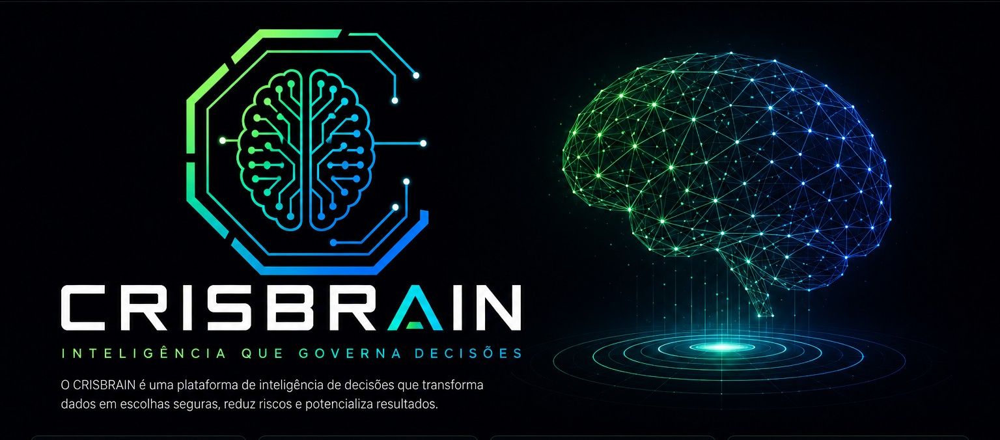

Redução de risco
Identificamos riscos antes que eles impactem suas decisões e resultados.

Informações excessivas, dados desconectados e falta de contexto geram decisões arriscadas, arrependimento e perdas financeiras.
Identificamos riscos antes que eles impactem suas decisões e resultados.
Descobrimos oportunidades reais com base em dados e contexto de mercado.
Nossa metodologia proprietária orienta decisões mais assertivas e confiáveis.
Mais acertos, menos arrependimentos e crescimento sustentável.
A arquitetura do CRISBRAIN opera por meio de uma camada proprietária de governança decisória, conectada a sistemas de extração de informações públicas, avaliação de risco, atribuição de valor e medição de influência.
O código-fonte, os pesos, as fórmulas e as regras internas da arquitetura não são expostos publicamente.
A metodologia do CRISBRAIN é orientada por princípios próprios de governança decisória, mantendo independência analítica na apresentação de informações e recomendações.